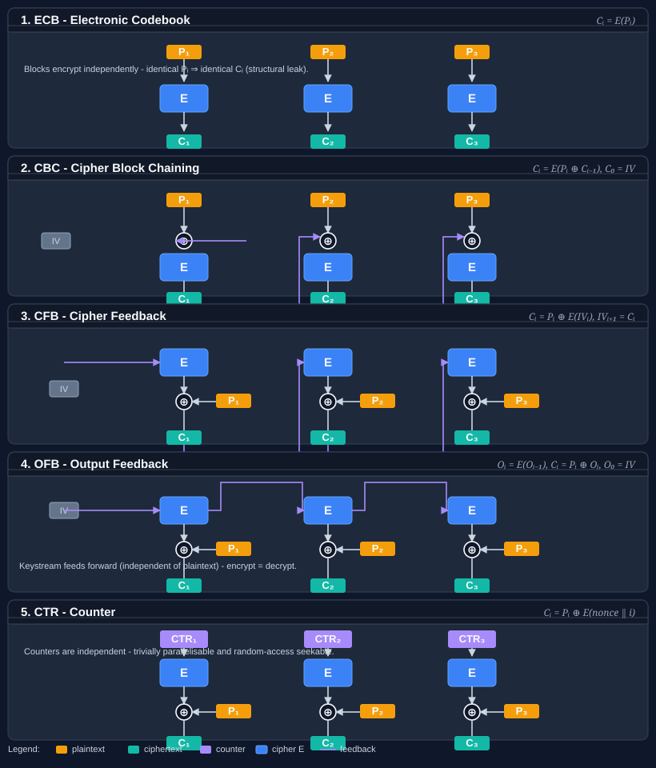

CipherModeKind Enum
Definition
- Namespace
- Bodu.Security.Cryptography
- Assembly
- Bodu.Security.Cryptography.dll
- Package
- Bodu.Security.Cryptography 1.2.0
- Source
- CipherModeKind.cs
Specifies a block-cipher mode for encrypting or decrypting multi-block messages. Mirrors the standard framework CipherMode values where this library exposes the same mode, and extends that surface with additional modes that are not part of the framework enum.
public enum CipherModeKind- Extension Methods
Fields
CBC = 1Cipher Block Chaining (CBC) mode. Each plaintext block is XORed with the previous ciphertext block before encryption. Mirrors CBC.
CBC provides confidentiality by chaining ciphertext blocks, so identical plaintext blocks produce different ciphertexts assuming different IVs. The first block uses an initialization vector (IV) instead of a previous ciphertext block.
This mode requires an IV equal in length to the cipher block size, which should be unpredictable for each message.
ECB = 2Electronic Codebook (ECB) mode. Each block is encrypted independently with no feedback. Mirrors ECB.
ECB is trivially parallelisable but leaks structural information: identical plaintext blocks always produce identical ciphertext blocks. It is insecure for virtually all real-world messages and should only be used as a primitive inside a higher-level construction.
This mode does not require an initialization vector.
OFB = 3Output Feedback (OFB) mode. Encrypts the previous output, or IV, to produce a keystream that is XORed with the plaintext or ciphertext. Mirrors System.Security.Cryptography.CipherMode.OFB.
OFB is similar to CFB but feeds the previous keystream block back into the cipher rather than the ciphertext, making it immune to bit-flip propagation. It operates like a synchronous stream cipher. The IV seeds the initial feedback register.
This mode requires an IV equal in length to the cipher block size, which must never be reused under the same key.
CFB = 4Cipher Feedback (CFB) mode. Encrypts the previous ciphertext, or IV, to produce a keystream that is XORed with the current plaintext or ciphertext. Mirrors CFB.
CFB turns a block cipher into a self-synchronizing stream cipher. It can recover from bit errors after a few blocks and uses the cipher's encryption primitive for both encryption and decryption. The IV is used to seed the feedback register for the first block.
This mode requires an IV equal in length to the cipher block size.
CTS = 5Ciphertext Stealing (CTS) mode. Applies CBC-style chaining while allowing the final plaintext portion to be shorter than a full block without expanding the ciphertext. Mirrors CTS.
CTS is used when ciphertext expansion is not acceptable and the final input block is partial. It rearranges the final two ciphertext blocks so that the ciphertext length matches the plaintext length.
This mode requires an IV equal in length to the cipher block size. It is not an authenticated mode and does not provide integrity protection.
CTR = 1024Counter (CTR) mode. Encrypts successive counter values to produce a keystream that is XORed with plaintext or ciphertext. This mode extends CipherMode and has no framework counterpart.
CTR transforms a block cipher into a parallelisable stream cipher with random access. It requires a nonce, or initial counter value, equal in length to the cipher block size.
Reusing a key and nonce pair across messages is catastrophic: the XOR of two ciphertexts encrypted with the same keystream recovers the XOR of the plaintexts. Callers must ensure that every counter value is used at most once per key.
XTS = 2048XEX-based Tweaked-Codebook mode with Ciphertext Stealing (XTS). Each block is independently encrypted with a per-block tweak derived from a sector number and updated via GF(2^n) multiplication. This mode extends CipherMode and has no framework counterpart.
XTS is the standard mode for storage and disk encryption (IEEE 1619-2007). The tweak evolves deterministically across consecutive blocks in a sector:
- Encrypt: C_i = E(P_i ⊕ T_i) ⊕ T_i
- Decrypt: P_i = D(C_i ⊕ T_i) ⊕ T_i
XTS requires two independent key streams, typically expressed as a doubled key, and an IV equal to the cipher block size representing the sector number. The decrypt direction uses the cipher's decryption primitive, unlike CFB, OFB, and CTR.
OCB = 4096Offset Codebook mode 3 (OCB3 / RFC 7253). A single-pass authenticated encryption mode that processes each block with a ntz-derived offset, producing ciphertext and an integrity tag simultaneously. This mode extends CipherMode and has no framework counterpart.
OCB derives a sequence of offsets from a nonce and pre-computed multiples of E(0...0):
- Encrypt: C_i = E(P_i ⊕ Δ_i) ⊕ Δ_i
- Decrypt: P_i = D(C_i ⊕ Δ_i) ⊕ Δ_i
where Δ_i = Δ_{i−1} ⊕ L[ntz(i)] and ntz(i) is the number of trailing zeros of i.
The OcbModeTransform implementation provides the encryption/decryption transform component. Full AEAD authentication, including associated data processing and tag generation/verification, requires the
IAeadBlockCipherModeTransforminterface extension.EAX = 8192EAX mode (Bellare, Rogaway, Wagner). A two-pass authenticated encryption mode combining CTR encryption with OMAC-based authentication of the nonce, ciphertext, and optional associated data. This mode extends CipherMode and has no framework counterpart.
EAX encryption applies CTR mode using OMAC(nonce) as the counter start:
- Keystream_i = E(counter_i), where counter increments each block.
- Both encrypt and decrypt XOR the input with the keystream (CTR property).
The EaxModeTransform implementation provides the CTR encryption component using the nonce directly as the initial counter. Full AEAD authentication, including OMAC nonce processing, OMAC ciphertext tag, and associated data, requires the
IAeadBlockCipherModeTransforminterface extension.SIV = 16384Synthetic IV (SIV / RFC 5297). A misuse-resistant authenticated encryption mode that derives a deterministic IV from the plaintext and associated data via S2V, then applies CTR encryption seeded by that IV. This mode extends CipherMode and has no framework counterpart.
SIV's determinism makes it resistant to nonce reuse: even if the same message is encrypted twice, the ciphertext is identical but no confidentiality is lost beyond confirming message equality. It is widely used for key wrapping and contexts where generating a unique nonce is unreliable.
The CTR counter is initialized from the SIV with bits 31 and 63 cleared to prevent counter wrap. Both encrypt and decrypt use only the cipher's encryption primitive (CTR property).
The SivModeTransform implementation accepts the pre-computed SIV directly as the IV. Full AEAD authentication, including S2V computation from plaintext and associated data, requires the
IAeadBlockCipherModeTransforminterface extension.
Remarks
The mirrored values CBC, ECB, OFB, CFB, and CTS are deliberately aligned with the numeric values of CipherMode so that those values can be converted between CipherModeKind and CipherMode by cast.
Bodu-specific values start at 1 << 10 to avoid colliding with framework-defined values. These include
CTR, XTS, OCB, EAX, and SIV.

Each value selects a different strategy for combining block cipher operations with feedback, sequencing, tweak, or authentication logic. The five panels above show the classic, non-authenticated modes:
- ECB - no feedback. Identical plaintext blocks produce identical ciphertext blocks.
- CBC - previous ciphertext block XORed into the next plaintext before encryption; the first block uses the IV.
- CFB - encrypted previous ciphertext, or IV, acts as keystream; self-synchronizing.
- OFB - encrypted previous keystream block feeds forward; plaintext is independent of the keystream chain.
- CTR - successive counter values are encrypted to produce an independent, random-access keystream.
Modes differ in security properties, parallelism, whether they require an initialization vector or nonce, and whether they provide authentication. Use Create(CipherModeKind, IBlockCipher, byte[]?) to obtain an IBlockCipherModeTransform for a given value.
Applies to
| Product | Versions |
|---|---|
| .NET | 8, 10 |